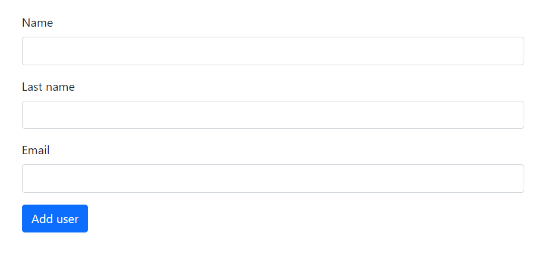
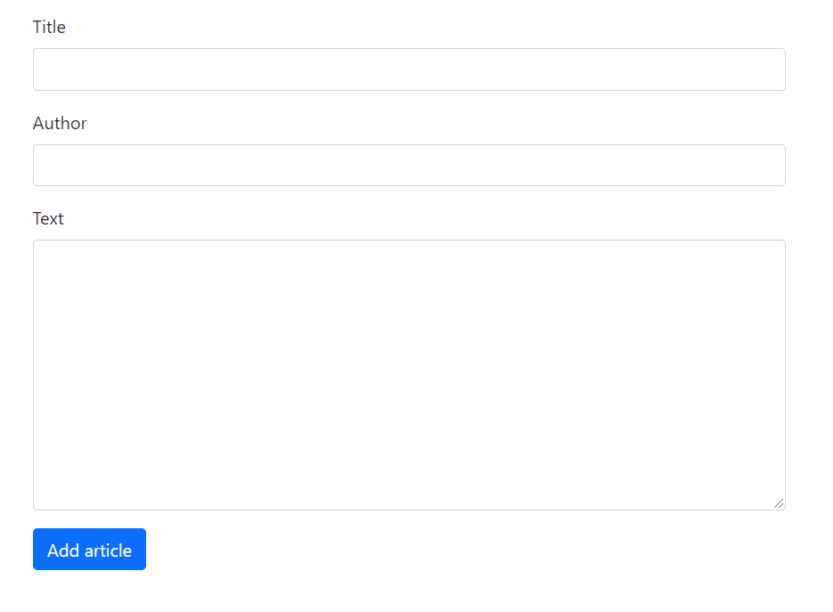

Додавання нових данних у firebase
1. Створіть 2 веб-сторінки та підключіть до них firebase firestore окремим файлом.
2. Сторнки повинні мати форми для додавання нових об'єктів у firbase - user, article. Використайте bootstrap форми за
посиланням
Сторінка №1 (add_user.html)
Сторінка №2 (add_article.html)


3. Створіть функції saveUser() та saveArticle() які зберігатимуть нового користувача та статтю у базу данних при кліку на кнопки Add user та Add article.
<script>
function addUser(){
const name = document...;
const last_name = ...;
const email = ...;
const new_user = {
title: title,
author: author,
text: text
}
console.log(new_user)
...
...
}
</script>
4. Нові обєкти повинні містити ключі як об'єкти з попередніх завдань.
Article: title, author, text.
User: name, lastName, email
<script>
// Приклад додавання нового документу у firebase
db.collection("users").add({
name: "Taras",
lastName: "Milevich",
email: "taras@gmail.com"
});
// Aбо
const user = {
name: "Taras",
lastName: "Milevich",
email: "taras@gmail.com"
}
db.collection("users").add(user)
</script>